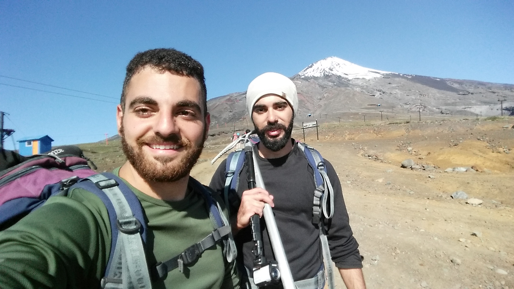
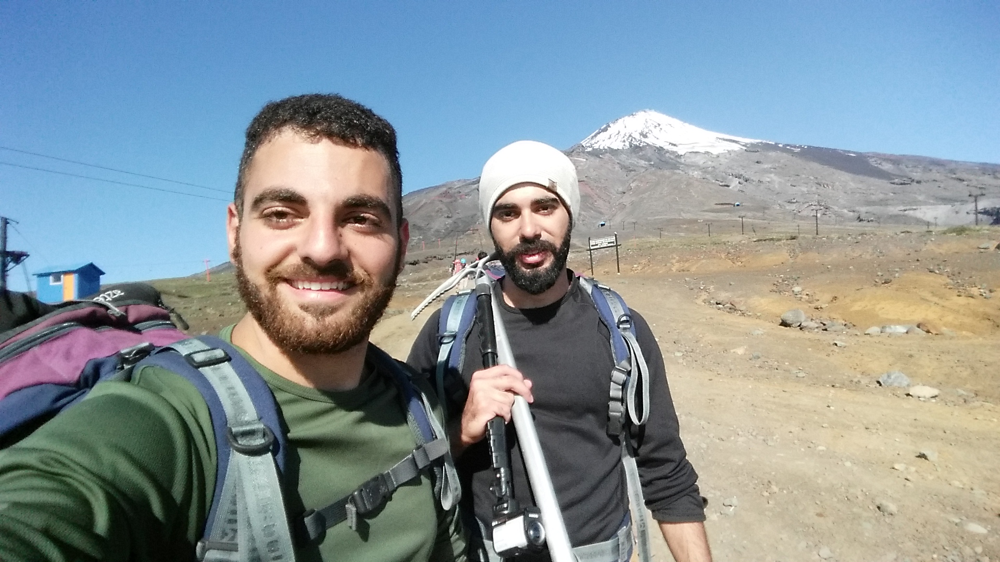
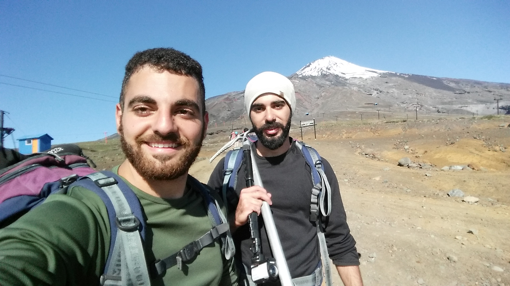

My photos
 

About Me
Hi, In order to break the ice, I'll tell about myself and than I hope you
will feel free to contact me for anything you need.
Soooo, my name is Amit Damri I am 26 years old, from Beer Sheva, Israel. I am an ISE (stands for
Information
System Engineering) third year student at Ben Gurion University. At my free time (actually I almost forgot
that I have that) I like
to watch soccer games, my favorite team is Hapoel Beer Sheva (if you know this team, don't worry I have
learned how to live with the suffer). I also like to play guitar, my favorite genres are 80's and 90's Rock.
And, perhaps you won't believe
that but I really like Programming and that's why I am here! Till now, one of my favorite courses was
Artificial Intelligence and the reason is that it has opened my mind about finding ways how to make things
better
and easier for our society. Back
to our buisness, this is my first site as part of "development environment" course, I hope I will learn as
much as I can about frontend programming and that the coronavirus would not affect us. In conclusion,
WELCOME to my site I hope you
would enjoy and don't forget the Like button.
My photos

My playlist
Give me a like
Scan my code
Q&A
Question 1 - 3 main diffrences between web 1.0, web 2.0 and web 3.0:
- Web 1.0 היה מוגדר לשימוש של קריאה בלבד, כלומר כמעט ולא כלל אינטראקציה יחד עם הצופה באתר אלא רק הציג לו
תוכן שספקית התוכן בחרה להציג. לעומת זאת בגרסת web 2.0 נכנסה גם אופציית הכתיבה והעריכה, וכך המשתמשים ברשת
יכלו לשתף את הידע שלהם ואת דעותיהם השונות יחד עם המשתמשים האחרים, זאת בנוסף לספקיות התוכן שעדיין יכלו להציג
מידע כפי שרצו. בגרסה של web 3.0 שילבו את הדברים, וקישרו בין רעיונות ומידע דומים/ משלימים וכך יצרו אוסף נרחב
של מידע המבוסס על מקורות שונים.
- חיפוש דפי אינטרנט - ב web 1.0 מנועי החיפוש החזירו תוכן בצורה מהירה אך התוכן רוב הפעמים לא היה
מדויק ולא
היה מתאים למשתמש. בweb 2.0 הופיע השימוש בתגיות, אשר הוגדרו באופן ידני, הן תיארו את הפריטים השונים ברשת
ומנועי החיפוש נעזרו בהן על מנת להחזיר מידע רלוונטי. בweb 3.0 ההגדרה של התגיות התבצעה באופן אוטומטי, ועל ידי
כך המידע שהוחזר היה רלוונטי ומדויק יותר.
- Web 1.0 התייחס יותר לנקודת המבט של החברה אשר סיפקה את דף האינטרנט, וסיפק את הצרכים שלה ואת
התוכן שהיא רצתה
להציג למשתמש לכן התוכן היה סטטי. בweb 2.0 ההתייחסות הייתה יותר לקהילה ובגלל זה אפשרה למשתמש להיות מעורב לכן
התוכן היה דינאמי. ב web 3.0 ההתייחסות היא לכל בן אדם ולכל פרט כאשר לכל אחד יש את הרצון שלו באינטרנט.
Question 2 - Medicines side effects Use Case:
דוגמא של תרחיש שימוש לשאילתה "תופעות לוואי של תרופות" בweb 1.0:
1. חיפוש מילות השאילתה "תופעות לוואי של תרופות" במנוע החיפוש למשל: AltaVista.
2. מנוע החיפוש מחפש אתרים המכילים את מילות השאילתה – יחד ובנפרד.
3. מנוע החיפוש מחזיר למשתמש את האתרים שמצא אשר מכילים את מילות השאילתה בעיקר ברמת מאקרו כלומר בלוגים,
אתרי מידע וכו'.
• המסמכים שחזרו לאו דווקא מתאימים, ולא בהכרח מסודרים לפי הסדר הרלוונטי.
• המסמכים שחזרו הן של חברות תוכן המפרסמות תרופות או שהמידע שם לא מתאים למשתמש כמו למשל מאמרים מדעיים.
דוגמא לתרחיש שימוש לאותה שאילתה ב web 3.0:
1. חיפוש מילות השאילתה "תופעות לוואי של תרופות" במנוע החיפוש למשל: google.
2. מנוע החיפוש מחפש את האתרים המכילים את מילות השאילתה וגם מילים שהן לא בהכרח בשאילתה כמו מילים
נרדפות.
3. מנוע החיפוש מחזיר את המסמכים מדורגים לפי מידת הרלוונטיות לשאילתה כאשר המסמך הראשון הוא הרלוונטי
ביותר – מחזיר מסמכים ברמת מיקרו ומקרו – כלומר תמונות, סרטוני וידאו, מיקומים ועוד בנוסף לאתרי האינטרנט
הרלוונטיים.
• המסמכים שחזרו בדרך כלל רלוונטיים ומדויקים לשאילתה שהוכנסה.
• המסמכים ניתנים להבנה על דיי המשתמש – יכול להיות מסמכים שנכתבו בידי משתמשים אחרים בשפה חופשית ולא
בהכרח בשפה מדעית.
• המנוע משתמש בתגיות על מנת למצוא את האתרים הרלוונטיים ביותר.
Contact me